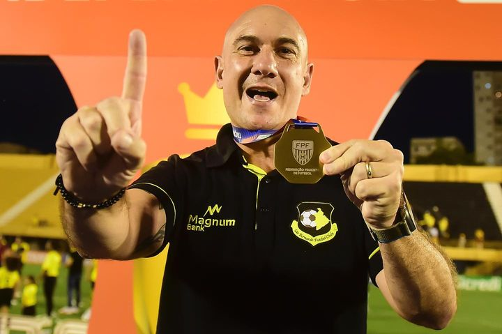

Em duelo válido pela final da Taça Independência 2023, São Bernardo se enfrentaram, assim como o Tigre e a Inter de Limeira no confronto anterior, pela segunda vez no ano pela segunda competição diferente, em confronto único, que terminou em vitória do Tigre nas penalidades e a conquista de mais um troféu para a história do clube, e esse sendo inédito.

A partida foi realizada no estádio Primeiro de Maio, onde já nos minutos iniciais o Tigre fez jus e ainda mais por ser final, e decidiu ir para cima do Mirassol e criando boas chances, as principais com Matheus Régis de fora da área e com Jeferson após um bate-rebate na área, onde buscou o cabeceio, mas foi para fora. Após os 30 minutos, o ritmo do jogo caiu bastante até pelo forte sol, mas o Tigre continuou buscando mais as jogadas ofensivas até mesmo com mais posse, e o Mirassol buscando pelos lados do campo, mas sem tanto perigo.
Já na segunda etapa, o jogo foi sem tantas chances de gol, porém com a melhor sendo do Tigre com João Carlos ainda no início da etapa, que quase abriu o placar após cabeçada, onde Zé Roberto tirou em cima da linha. A equipe ainda mantinha sua proposta de jogo buscando alternativas para chegar ao seu gol mas sem sucesso, sendo assim, realmente a segunda etapa ficou marcada mais por cansaço, receio e certa falta de espaços assim como criação de ambas equipes.
Com tal resultado sendo mantido até o fim do jogo, o 0x0 no caso, a partida foi as penalidades e criou todo um cenário de tensão. Nas cobranças, o Mirassol já começou desperdiçando com Kauan, e para o Tigre, João Carlos errou na segunda cobrança da equipe. Até que então, o zagueiro Reniê do Mirassol na última cobrança da equipe antes do que se parecia levar, que eram os alternados, mandou sua cobrança para fora e na última do Tigre, coube a Fernando Neto fazer e dar o título para o grande do ABC.
Fim de competição, fim de jogo e título para o Tigre após jogo tenso, o primeiro da história referente a competição por ser também seu primeiro ano disputando, e o que seria até então também, na história num geral do clube, seu quinto título. Também referente a outro mérito do título conquistado, o São Bernardo recebeu pela conquista o valor de 400 mil, valor que foi aumentado pela Federação Paulista de Futebol referente aos últimos anos.